| 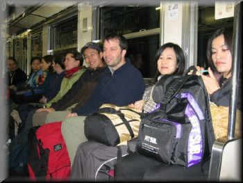 | 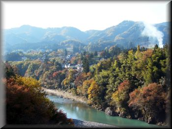 | 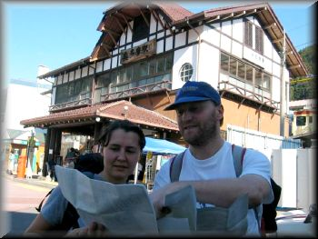 |
| on Joban line, early morning | **(two star)-walkers start from Hinatawada | ***-walkers go ahead to Okutama stn. and find their way |
| 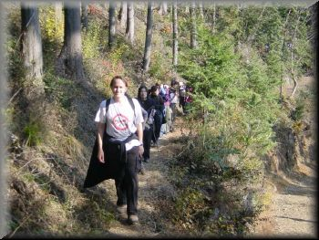 | 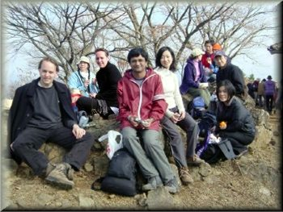 | 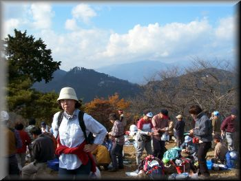 |
| for **-walkers a nice walk to reach Hinode-peak, have lunch and relax | a big crowd sunning at this peak | |
| 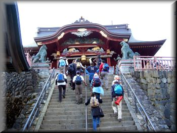 | 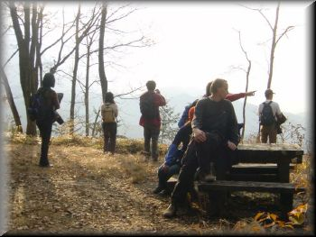 | 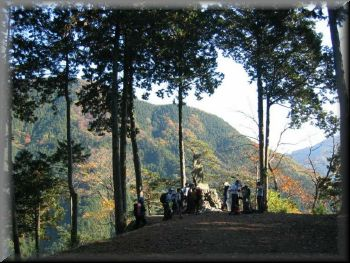 |
| Mitake shrine | nice views before the steep descent to Kori | ***-hikers on their first rest |
| 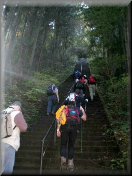 |
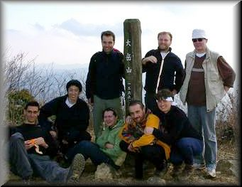 |
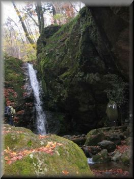 |
|
the ***-walk was
tough but rewarding. |
||
| Report by Ginny |
|
Thanks to everyone who joined the Okutama hike! It was a bit confusing, with many people joining and dropping out right until the last minute, but eventually about 17 of us boarded the train at Shinjuku. Along with the rest of Tokyo, it seemed (clearly, the perfect weather and autumn colours were attracting many people to leave the comfort of Sunday morning lie-in).
Unfortunately, having got on what we thought was
the front of the train headed for Okutama, we found it was actually
the back of the train headed goodness-knows-who-where, so we had to
abandon our seats and squeeze onto the already crowded front
carriages.
Twelve of us got of at Hinatawada to do the easy
hike, while the "difficult" walkers stayed on. The weather was sunny
and warm, and Hinatawada itself was surprisingly beautiful, with a
glorious view of autumn colours as we crossed a gorge to find the
mountain trail. Despite a somewhat misleading map, we eventually
found the entrance to the shrine at the start of the walk, and left
the mundane world behind. The ridge walk to Hinode Yama followed a
very easy, pleasant wooded trail, with tantalizing glimpses of the
promised views through the trees. We came across one or two other
hikers, and a mountain bike, but otherwise we had the lovely
peaceful surroundings to ourselves. It was a bit of a shock, then,
to arrive at the summit of Hinode Yama to find it already packed
with hikers enjoying the lovely all-round views and cooking their
lunches on gas stoves! Most of them had just walked over from the
cable car station on nearby Mitake... We managed to squeeze a little
space for ourselves to relax and have lunch and enjoy the views over
the Tanzawa mountains and the Tokyo metropolis. Fuji-san, as usual,
was being coy but still the views were great.
After a while, though, one particularly large
group started a sing-song and we decided it was time to head for
Mitake san. We already sensed that Mitake san was a pretty popular
place as we met so many people on the way. But we were still
surprised to be greeted by a goat in an old farmhouse. Mitake is
really quite a large village, complete with thatched minkastyle
houses, hotels, omiyage shops, cable car and, of course, the
impressive shrine on the summit. This was where we were supposed to meet up with the other group, but since their
phones were still out of range, daylight time was limited, and we
were still full of energy, we decided to go ahead and walk down to
Kori. |